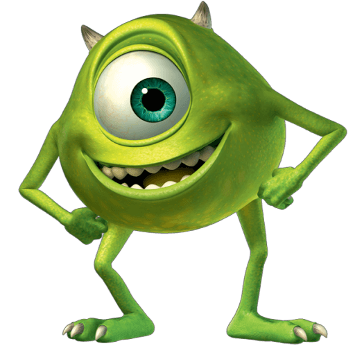

There's a reason why there are monsters in children's closets—it's their job. Monsters, Inc. is the most successful scream-processing factory in the monster world, and there is no better Scarer than James P. Sullivan. But when "Sulley" accidentally lets a little human girl into Monstropolis, life turns upside down for him and his buddy Mike.
Monsters, Inc. (Monsters, Incorporated) is a 2001 American computer-animated[2] monster comedy film produced by Pixar Animation Studios for Walt Disney Pictures. Featuring the voices of John Goodman, Billy Crystal, Steve Buscemi, James Coburn, Mary Gibbs and Jennifer Tilly, the film was directed by Pete Docter in his directorial debut, and executive produced by John Lasseter and Andrew Stanton. The film centers on two monsters, the hairy James P. "Sulley" Sullivan and his one-eyed partner and best friend Mike Wazowski, who are employed at the titular energy-producing factory Monsters, Inc., which generates power by scaring human children. However, the monster world believes that the children are toxic, and when a little human girl sneaks into the factory, she must be returned home before it is too late. Docter began developing the film in 1996, and wrote the story with Jill Culton, Jeff Pidgeon and Ralph Eggleston. Stanton wrote the screenplay with screenwriter Daniel Gerson. The characters went through many incarnations over the film's five-year production process. The technical team and animators found new ways to simulate fur and cloth realistically for the film. Randy Newman, who composed the music for Pixar's three prior films, returned to compose for its fourth. Upon its release on November 2, 2001, Monsters, Inc. received critical acclaim and was a commercial success,[3] grossing over $577 million worldwide to become the third highest-grossing film of 2001.[1] The film won the Academy Award for Best Original Song for "If I Didn't Have You" and was nominated for the first Best Animated Feature, but lost to DreamWorks' Shrek, and was also nominated for Best Original Score and Best Sound Editing. Monsters, Inc. saw a 3D re-release in theaters on December 19, 2012. A prequel titled Monsters University, which was directed by Dan Scanlon, was released on June 21, 2013. A television series titled Monsters at Work premiered on Disney+ on July 7, 2021.

In a world inhabited by monsters, the city of Monstropolis harnesses the screams of human children for energy. At the Monsters, Incorporated factory, skilled monsters employed as "scarers" venture into the human world to scare children and harvest their screams, through doors that activate portals to children's bedroom closets. The field is considered dangerous, as human children are believed to be toxic. Energy production is falling because children are becoming less easily scared, and the company's CEO, Henry J. Waternoose III, is determined to keep the company from failing. One evening after work, scarer James P. Sullivan, or Sulley for short, discovers that an active door has been left in the station of his rival, Randall Boggs. He inspects the door and accidentally lets a small toddler girl into the factory. A frightened Sulley unsuccessfully attempts to return the girl, who escapes into Monstropolis, interrupting Sulley's best friend and assistant Mike Wazowski on a date at a sushi restaurant. Chaos erupts when other monsters see the girl, Sulley and Mike manage to escape with her before the Child Detection Agency (CDA) arrives and quarantines the restaurant. Forced to keep the girl hidden in their apartment for the night, Sulley soon realizes that the girl is not toxic and her laughter is able to cause a power surge more powerful than screams. The next day, Sulley and Mike sneak the girl back into the factory disguised as a monster and attempt to send her home. While Mike seeks out her door, Sulley grows attached to her and nicknames her "Boo". Randall, waiting in ambush for her, kidnaps Mike by accident and reveals his plan to revolutionize scaring: to kidnap children and extract screams from them, using a large vacuum-like machine of his invention called the Scream Extractor. Sulley rescues Mike and they go to tell Waternoose about Randall's plan, finding the boss in the middle of a scare demonstration, where he encourages Sulley to perform his roar in the company's simulator room. Sulley unknowingly scares Boo and realizes that scaring children to power the monster world is wrong. Boo inadvertently reveals herself in front of Waternoose, who is revealed to be in league with Randall, and they exile Mike and Sulley to the Himalayas while keeping Boo with them. The pair are taken in by a yeti, another exiled monster, who tells them about a nearby village, which Sulley realizes he can use to return to the monster world, but Mike refuses to go with him, blaming Sulley for their situation. Sulley returns to the factory and saves Boo from the Scream Extractor, but Randall tries to kill Sulley. Mike returns to reconcile with Sulley, inadvertently saving him from Randall, and they go to return Boo home. Randall pursues them into the door vault, where Boo's laughter activates all the doors at once, allowing them to freely pass in and out of the human world as they attempt to escape. Randall eventually catches up to them and attempts to kill Sulley again, but Boo overcomes her fear of Randall and attacks him, enabling Sulley to catch him. Sulley and Mike hurl Randall through a door to a trailer, where two residents mistake him for an alligator and beat him with a shovel. Sulley and Mike then destroy the door to prevent Randall's return. When Mike and Sulley locate Boo's door, Waternoose, accompanied by the CDA, bring it down to the scare floor with the intent of arresting Mike and Sulley. Mike distracts the CDA while Sulley and Boo escape with her door, leading Waternoose into the simulation room where he reveals his and Randall's plans of saving the company by kidnapping children to Sulley. Mike records the conversation, exposing him to the agents, and Waternoose is arrested by the CDA. The scare floor administrator Roz reveals herself to be the head of the CDA, working undercover to find the mastermind behind the company's internal actions. She thanks Mike and Sulley for their help and allows Sulley to return Boo home, but has the door demolished. Sulley's only memento of Boo is a shredded fragment of her door. Inspired by his experiences with Boo, Sulley concocts a plan to retool the company's power generation method to harvest children's laughter instead of screams, as laughter is ten times more powerful. With the energy crisis solved, the factory is now focused on making children laugh to collect energy; Mike becomes the company's top comedian and Sulley is named the new CEO. Mike reveals to Sulley he has rebuilt Boo's door, which only works with all the pieces. Sulley inserts his fragment, enters and is recognized by Boo.
Monsters Inc. was Randy Newman's fourth feature film collaboration with Pixar. The end credits song "If I Didn't Have You" was sung by John Goodman and Billy Crystal.[17] The album was nominated for the Academy Award for Best Original Score and a Grammy Award for Best Score Soundtrack for Visual Media. The score lost both these awards to The Lord of the Rings: The Fellowship of the Ring, but after sixteen nominations, the song "If I Didn't Have You" finally won Newman his first Academy Award for Best Original Song. It also won a Grammy Award for Best Song Written for Visual Media.
James P. “Sulley” Sullivan may be the most celebrated Scarer in Monstropolis, but that doesn't make him mean. When the softhearted monster has to care for Boo, he discovers that love and laughter are more powerful than making kids scream.

Sulley's scare assistant, best friend, and roommate doesn't want any interruptions in his life—especially in his relationships. Although Mike thinks Boo is a "killing machine" at first, he later finds she's a great audience for his natural comedic talent.


Able to scare even his co-workers with his chameleon abilities, Randall is one of the most wicked monsters in Monstropolis. His plan to capture the all-time scare record only scratches the surface of his sinister agenda.